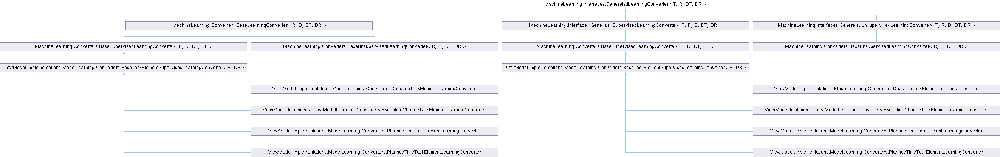

Шаблон интерфейса MachineLearning.Interfaces.Generals.ILearningConverter< T, R, DT, DR >
Интерфейс конвертора данных в данные для предсказания и наоборот. Подробнее...
Граф наследования:MachineLearning.Interfaces.Generals.ILearningConverter< T, R, DT, DR >:

Открытые члены | |
| T | ConvertData (DT data) |
| Конвертирует входные данные под входные данные для предсказания. | |
| DR | ConvertPredicted (R predicted) |
| Конвертирует предсказанное значение в выходное значение. | |
Подробное описание
Интерфейс конвертора данных в данные для предсказания и наоборот.
- Параметры шаблона
-
T Тип входных данных для предсказания. R Тип выходных данных для предсказания. DT Тип входных данных. DR Тип выходных данных.
См. определение в файле ILearningConverter.cs строка 10
Методы
◆ ConvertData()
| T MachineLearning.Interfaces.Generals.ILearningConverter< T, R, DT, DR >.ConvertData | ( | DT | data | ) |
Конвертирует входные данные под входные данные для предсказания.
- Аргументы
-
data Данные.
- Возвращает
- Возвращает конвертированные входные данные для предсказания.
Замещается в MachineLearning.Converters.BaseLearningConverter< R, D, DT, DR >.
◆ ConvertPredicted()
| DR MachineLearning.Interfaces.Generals.ILearningConverter< T, R, DT, DR >.ConvertPredicted | ( | R | predicted | ) |
Конвертирует предсказанное значение в выходное значение.
- Аргументы
-
predicted Предсказанное значение.
- Возвращает
- Возвращает конвертированное выходное значение.
Замещается в MachineLearning.Converters.BaseLearningConverter< R, D, DT, DR >.
Создано системой